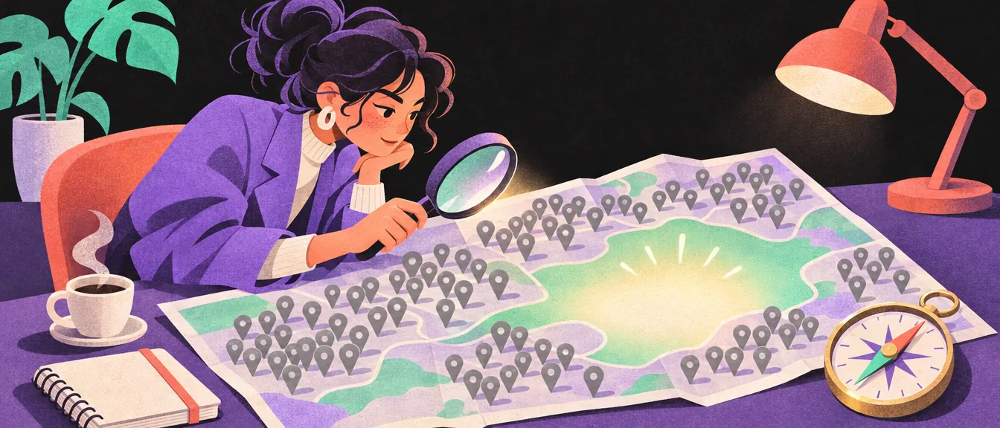
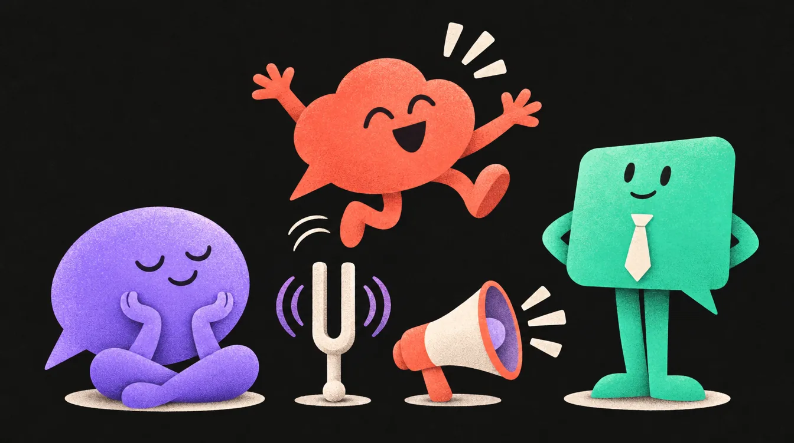
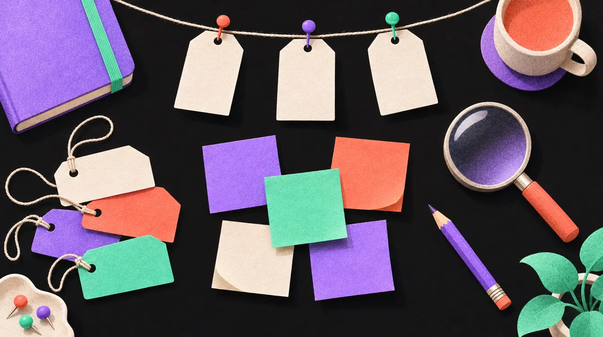
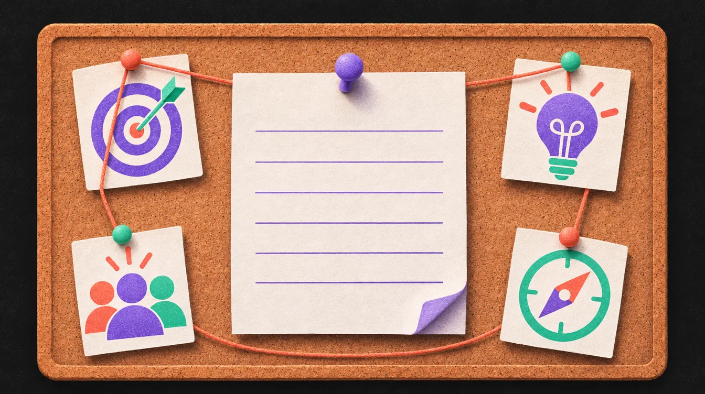

אסטרטגיה, קול ומתחרים
לפני שפותחים תוכנה: מה המותג מספר, למי הוא מדבר, במה הוא שונה, ואיך הוא נשמע. ואז, מה הוא לעולם לא יגיד, ואיפה החלל העיצובי שאף מתחרה עוד לא נגע בו.

סיפור, קהל ומיצוב
אם אתם עושים פרויקט מיתוג לפורטפוליו או לפרויקט לימודי, יש גם 3 דברים שמרצים מאוד אוהבים לראות. הם לא „עוד עמוד” בהגשה: הם הסיבה שכל שאר ההחלטות העיצוביות נראות הגיוניות.
1. סיפור המותג
מותגים חזקים מספרים סיפור, וסיפור יוצר חיבור רגשי שעובדות לבד לא יוצרות. הסיפור יכול להיות על מקור המותג (מי, איפה ולמה זה התחיל), על הבעיה שהוא פותר, או על הערכים שלו.
הטעות הנפוצה: לשים את המותג במרכז הסיפור. במסגרת StoryBrand של דונלד מילר, הלקוח הוא הגיבור, והמותג הוא המדריך. כמו יודה, לא כמו לוק סקייווקר:
- דמותהלקוח, הגיבור
- בעיהחיצונית, פנימית, עקרונית
- מדריךהמותג: אמפתיה וסמכות
- תוכנית3–4 צעדים פשוטים
- קריאה לפעולהישירה וברורה
- כישלוןמה קורה אם לא
- הצלחההשינוי בסוף
וכלל הברזל של מילר: „אם אתם מבלבלים, אתם מפסידים.” סיפור טוב אפשר לספר בשני משפטים.
2. למי המותג פונה
מיתוג צריך לדבר לקהל מסוים. אי אפשר לפנות לכולם, ומותג שמנסה לא מדבר עם אף אחד. לפני שמעצבים, ענו בכתב על חמש שאלות:
- מה המותג עושה?
- למי הוא פונה? (גיל, אורח חיים, מה מטריד אותם, מה הם כבר אוהבים)
- איזו בעיה הוא פותר להם?
- מה מבדל אותו מהמתחרים?
- איזה רגש הוא רוצה ליצור?
ואז לכו עוד צעד: הלוגו בכלל לא בשביל הלקוח שלכם, הוא בשביל ה„שבט” שהלקוח רוצה להתחבר אליו. איך הם מתלבשים, מה הם גוללים, אילו מותגים הם כבר אוהבים. השבט ותהליך העבודה
3. מיצוב: איך הוא שונה מהמתחרים
מיצוב הוא משפט אחד שמכריח אתכם להחליט. נוסחת המיצוב הקלאסית: „עבור [קהל יעד], [המותג]: [הקטגוריה] ש[נקודת הבידול], כי [הסיבה להאמין].” כל החלטה עיצובית אחר כך אמורה „להוכיח” את המשפט הזה. נסו:
עוד כלי מהיר: איפה המותג עומד על ארבעה צירים. אין תשובה נכונה, יש תשובה ברורה. מותג שעומד „באמצע” בכל הצירים, לרוב לא אומר כלום.
להתחיל מ„למה”
סיימון סינק הראה שמותגים שמעוררים נאמנות מספרים את הסיפור מבפנים החוצה: קודם למה, אחר כך איך, ורק בסוף מה. רוב העסקים עושים בדיוק הפוך.
- למה: המטרה. למה המותג קיים, מעבר לכסף.
- איך: הדרך. מה מיוחד באופן שבו הוא עושה את זה.
- מה: המוצר. מה בפועל קונים.
מחקר מתחרים
לפני שמשרטטים סקיצה אחת, בודקים מה כבר יש בחוץ. התרגיל הזה לוקח שעה, וחוסך שבועות של עיצוב לוגו שנראה כמו של כולם.
- מצאו 5–6 לוגואים של חברות מתחרות למותג שאתם עובדים עליו.
- מקמו את כל הלוגואים שלהם על דף אחד (בלי השמות אם אפשר, רק האייקון) ובדקו האם יש מכנה משותף.
- האם כולם „נכונים” לתעשייה שלהם ומנסים להיות דומים? והאם יש מיוחדים? מה מיוחד בחריגים?
- בדקו האם להחליף מקומות בין לוגואים יוצר הרגשה שונה, או שהלוגואים כל כך דומים שזה לא משנה. זה סימן לדעת ממה להיזהר: סימן שהם עיצבו לנוחות וביטחון, לא לתעוזה וחדשנות.
החלל העיצובי
שאלו את עצמכם: מה „החלל העיצובי” שאף מותג עדיין לא נגע בו?
מה עוד כדאי לאסוף, חוץ מלוגואים
הלוגו הוא ההתחלה. על אותו דף (או בורד) אספו גם:
- פלטות צבעים
- סגנון טיפוגרפי
- שפה גרפית
- סגנון צילום
- טון דיבור באתר וברשתות
ואז חפשו דפוסים: אם כל המתחרים כחולים, או כולם בפונט עגול, או כולם מצלמים באור לבן ושטוח, זה המקום לבחור כיוון אחר. אם המותג נראה כמו המתחרים שלו, הוא לא ייזכר.
המפה מההדגמה היא כלי אמיתי: בוחרים שני צירים שחשובים לקהל (מסורתי־חדשני, רגוע־נועז, יוקרתי־נגיש) ומניחים עליה את כל המתחרים. הצירים צריכים להיות כאלה שהלקוח שלכם יכול לבחור בהם צד.
אישיות: 12 הארכיטיפים
קרל יונג תיאר דפוסי אישיות אוניברסליים, ומרגרט מארק וקרול פירסון התאימו אותם למיתוג בספר The Hero and the Outlaw (2001). שנים־עשר ארכיטיפים, בארבע קבוצות לפי המניע. היתרון: כשבוחרים ארכיטיפ, כל החלטה, מהפונט ועד הטון במענה ללקוח, נגזרת מאותה אישיות.
בחרו ארכיטיפ ראשי אחד (אפשר משני אחד לתיבול), הגדירו 3–5 תארים שמתארים את המותג, ותנו להם להוביל את הקול, את השפה החזותית ואת התוכן בכל נקודת מגע. שני מותגים באותה תעשייה יכולים להיות ארכיטיפים הפוכים, וזה בדיוק הבידול.
סיפור מותג וטון דיבור

מיתוג שלם הוא לא רק איך זה נראה, אלא גם איך זה מדבר. הגדירו:
- אישיות המותג (קליל? אלגנטי? משפחתי?)
- שלושה מסרים עיקריים שמלווים כל פרסום
- התאמה בין ערכי המותג לבין הצבעים, האיורים והטיפוגרפיה
אישיות המותג
אותו מסר בדיוק, שלוש אישיויות. שימו לב מה משתנה: אורך המשפטים, בחירת המילים, ההומור, ואפילו מה שהעין מצפה לראות סביב הטקסט.
שלושה מסרים, לא עשרה
למה דווקא שלושה? כי יותר מזה קשה לזכור. שלושה מסרים שחוזרים בכל פרסום, בניסוחים שונים, הופכים לזיכרון. עשרה מסרים הופכים לרעש. דוגמה למאפייה מהפרק: „שאור אמיתי”, „יוצא חם כל בוקר”, „המאפייה של השכונה”. כל פוסט, שלט או שקית אומרים לפחות אחד מהם.
מהערכים אל הצבע, האיור והטיפוגרפיה
ההתאמה בין הערכים לעיצוב היא לא „תחושה”, אפשר לכתוב אותה בטבלה. ככה נראית טבלה כזו (הדוגמאות כלליות, תתאימו למותג שלכם):
| ערך | צבע | איור וצילום | טיפוגרפיה |
|---|---|---|---|
| חמימות משפחתית | חומים, קרם, כתום אפוי | קו יד לא מושלם, אור טבעי, ידיים בפריים | סאנס מעוגל וידידותי |
| מקצועיות ודיוק | מעט צבעים, הרבה ריק, צבע הדגשה אחד | צילום נקי על רקע אחיד, אייקונים בקו אחיד | סאנס נקי, היררכיה חדה |
| חדשנות ותעוזה | צבע רווי אחד שאף מתחרה לא לקח | קומפוזיציות לא צפויות, גריד שנשבר בכוונה | פונט תצוגה (Display) בולט לכותרות |
קול מול טון
שני מושגים שכדאי להפריד: הקול הוא האישיות הקבועה של המותג. הטון הוא איך הקול מותאם לרגע. אתם אותו אדם בחתונה ובלוויה, אבל לא מדברים באותו טון. מחקר של Nielsen Norman Group מצא שלטון באתר יש השפעה מדידה על כמה המותג נתפס ידידותי, אמין ורצוי.
| מצב | מה הקהל מרגיש | מה המותג עושה | דוגמת ניסוח |
|---|---|---|---|
| הצלחה | הקלה | מחזק ומראה צעד הבא | „מעולה, זה נשמר. עכשיו אפשר ___.” |
| שגיאה | לחץ, בלבול | הסבר קצר ופתרון | „לא הצלחנו לשמור כי ___. נסו ___.” |
| המתנה | חוסר סבלנות | שקיפות וזמן משוער | „זה לוקח עד ___ שניות. אפשר להמשיך לעבוד בינתיים.” |
| אזהרה | חשש | בהירות ואחריות | „שימו לב: הפעולה תמחק ___. להמשיך?” |
שפה תקשורתית (קופי בקטנה)
שלושה תרגילים קצרים שעושים יותר לאישיות של המותג מעמוד שלם של „חזון וערכים”:
- צרו רשימה של 5 מסרים, מילים וקונספטים שהמותג לא יגיד לעולם. (דוגמאות: זול, משוגע, יקר, כיפי, חברותי)
- בנוסף, רשימה של 5 מסרים שהמותג יתקשר כל הזמן, באופן תדיר. זה יכול להיות מילים, משפטים וכו’. (דוגמאות: מדויק, בנוי, עשוי, חריג, קהילה וכו’)
- אם המותג היה צריך לדבר, לתקשר לעולם ב־40 תווים: איך הוא יישמע, מה הוא היה אומר?
לעולם לא, כל הזמן
המותג לא יגיד לעולם
- זול
- משוגע
- יקר
- כיפי
- חברותי
המותג אומר כל הזמן
- מדויק
- בנוי
- עשוי
- חריג
- קהילה
שימו לב שהרשימות תלויות במותג: מילים כמו „כיפי” ו„חברותי” הן „לעולם לא” למותג מדויק ובנוי כמו בדוגמה, אבל „כל הזמן” למותג גלידה לילדים. ורשימת ה„לעולם לא” היא לפעמים החשובה מבין השתיים: היא שומרת על המותג מלהישמע כמו כל המתחרים.
40 תווים
כשהרשימות והמשפט מוכנים, הם הופכים בהצגה ללקוח לעמוד „מה בחרנו להיות, ומה במכוון לא”. אנחנו כן / אנחנו לא
שם, סלוגן ומה שביניהם

לפעמים הלקוח מגיע עם שם, ולפעמים השם הוא חלק מהפרויקט. שישה סוגים נפוצים של שמות:
על שם המייסד
אישי ומסורתי. קשה למכור את העסק בלי השם.
תיאורי
מובן מיד, אבל קשה להגן עליו ולרוב בלי רגש.
מטאפורי
אמזון כמו הנהר הגדול בעולם, נייקי אלת הניצחון.
מומצא
מילה חדשה לגמרי. בעלות מלאה, אבל המשמעות נבנית מאפס.
הלחם
שתי מילים שהתאחדו: instant camera + telegram, pin + interest.
מעורר אסוציאציה
מילה קיימת שיוצאת מההקשר שלה, ומפתיעה.
כל שם צריך לעבור חמש בדיקות: זכיר, קל להגייה, יכול לגדול עם העסק, אפשר לרשום אותו כסימן מסחר, ויש לו דומיין פנוי. ובעברית עוד שלוש: איך הוא נשמע בעברית ובאנגלית, האם התעתיק שלו עקבי, והאם יש לו משמעות סלנג שלא תכננתם. לפני שמתאהבים בשם, חפשו אותו במאגר סימני המסחר של רשות הפטנטים.
סוגי סלוגנים וטאגליינים
| סוג | דוגמה |
|---|---|
| תיאורי | “The Ultimate Driving Machine” (BMW) |
| תועלת | “Just Do It” (Nike) |
| שאיפה | “Think Different” (Apple) |
| רגשי | “Because You’re Worth It” (לוריאל) |
| שאלה | “Got Milk?” (מועצת החלב בקליפורניה) |
אותם סוגים עובדים גם לטאגליין וגם לסלוגן. ההבדל הוא כמה זמן הם חיים: טאגליין שייך למותג ונשאר שנים, כמו Just Do It. סלוגן שייך לקמפיין ומתחלף איתו, כמו Think Different, שליווה קמפיין של אפל.
תבנית: בריף אסטרטגי בעמוד אחד

כל מה שבפרק הזה, בטבלה אחת. מלאו אותה לפני שפותחים תוכנה, ותחזרו אליה בכל פעם שאתם מתלבטים בין שני כיוונים. היא גם הבסיס לעמוד האסטרטגיה בהצגה ללקוח.
| שדה | שאלה מנחה | תבנית לניסוח |
|---|---|---|
| במשפט אחד | מה עושים, בלי חפירות? | „אנחנו עוזרים ל־___ לעשות ___ בלי ___.” |
| קהל יעד ראשי | מי, ומה מניע או מפחיד אותו? | „___ בני ___; צריכים ___; נרתעים מ־___.” |
| ערך מעשי | מה התועלת בפועל? | „חוסך זמן / כסף / טעויות ב־___.” |
| ערך רגשי | איך זה גורם להרגיש? | שקט, ביטחון, שליטה, שייכות… |
| בידול | למה לבחור דווקא בנו? | „אנחנו היחידים ש־___ כי ___.” |
| הוכחות | מה מוכיח את ההבטחה? | נתונים, תהליך, תעודות, לקוחות |
| אישיות וארכיטיפ | מי המותג אם הוא אדם? | 3–5 תארים + ארכיטיפ ראשי |
| טון דיבור | איך מדברים במצבים שונים? | „ישיר, לא מתנשא; דחוף כשצריך; רגוע בשגרה.” |
| לעולם לא / כל הזמן | מה המותג לא יגיד לעולם? | 5 מילים לכל רשימה |